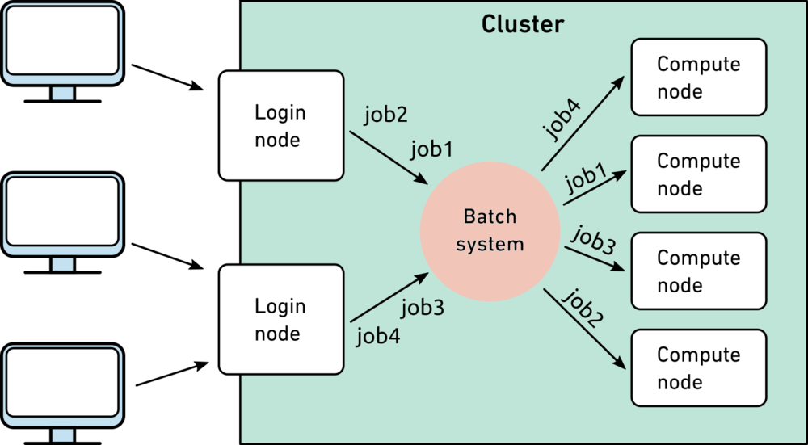

def get_threads(rule_default, config, rule_name):
config_param = config.get(f"{rule_name}_threads")
if config_param is not None:
return int(config_param)
return rule_defaultCluster-friendly Snakemake
Using a compute cluster
SLURM
Resource management for computing is often done using a job scheduler such as Slurm. Slurm will be the focal job scheduling system in this resource, but others exist (the concepts remain consistent across other systems). Slurm manages the priority of compute jobs across users (based on factors such as memory/time requirements and user priority), and it manages parallelization and execution of jobs on compute nodes.
Batch jobs
Unlike running commands from a command line on your local computer, any compute-heavy jobs on clusters need to be done through the submission of batch jobs. Batch jobs could be considered “wrappers” for your compute jobs, with specifications of the resources needed. Slurm allocates the necessary resources on a compute node, then sends that job to be performed on the compute node. Below is an image from ETH Zurich scientific computing wiki demonstrating this process. 
Example batch jobs submission
This often involved running a .sbatch script, which has the resource requirements at the top. Here is an example for trimming reads in a fastq file:
#SBATCH --mail-user=<email_address>@colorado.edu
#SBATCH --partition=short # run on the short partition
#SBATCH --nodes=1 # Only use a single node
#SBATCH --ntasks=1 # Run with one thread
#SBATCH --mem=8gb # Memory limit
#SBATCH --time=02:00:00 # Time limit hrs:min:sec
#SBATCH --output=/path/to/here/logs/trim_reads_%j.out # Standard output and error log
#SBATCH --error=/path/to/here/logs/trim_reads_%j.err # %j inserts job number
# activate conda environment
source activate seqtk_env
# trim reads
seqtk trimfq -b 10 -e 5 raw_reads.fq > trimmed_reads.fqWhich could be run with the following command:
sbatch trim_reads.sbatchUsing Snakemake to automate batch job submission
This works well for single jobs, but again, when things start to scale up (50 samples, 10 steps per sample, etc..), this can become cumbersome.
Story time
When I was new to working on clusters, I found myself writing python scripts to loop through each of my samples, find their files, then run sbatch scripts that had to parse/sanitize multiple parameters. I certainly could have done this more simply, but it quickly snowballed into a 50-150 line python script with a >25 line sbatch script per step, leading to a >>1000 line codebase for a project with just a few processing steps. The last straw was when I needed to go back and run step 1 with new parameters, meaning I had to manually rerun every following step (after waiting for all samples to finish each step).
Using Snakemake, to manage I was able to reduce this codebase by ~70% and reduce my manual input by ~50%. To quote Casey Martin, “Compute flops are cheap and nearly unlimited at our level; human flops are expensive and limited,” so we need to prioritize efficiency in our human flops, using tools like Snakemake.
Snakemake + Slurm
My favorite part of using Snakemake has been that once a Slurm profile is set up, it will handle all of the sbatch job submission for you. This “profile” is really just a little tool that creates the .sbatch script, submits it, logs output/error, and monitors completion. In your Snakefile, you can specify resource requirements and conda environment, such that the previous script would look like this:
rule trim_fastq:
input:
"raw_reads.fq"
output:
"trimmed_reads.fq"
resources:
partition="short",
mem_mb=8000,
runtime=120 #min
threads: 1
conda: "seqtk_env"
shell:
"""
seqtk trimfq -b 10 -e 5 {input} > {output}
"""In this case it doesn’t look much more concise, but it is much easier to generalize this rule to run multiple samples/parameters, and to chain multiple samples together. Most importantly, it’s easier to read and debug!
“Programs must be written for people to read, and only incidentally for machines to execute.” ― Harold Abelson, Structure and Interpretation of Computer Programs
Setting up a SLURM profile
This section will explain how to set up a profile to integrate Snakemake with the job scheduling system, Slurm.
Why it matters
Slurm profiles are advantageous because they manage submission/monitoring of each step in your Snakemake pipeline as separate batch jobs. For example, if you have 50 samples to process through 10 rules, the SLURM profile will submit/monitor each rule & sample combination as a separate job, so:
- These jobs can run in parallel, with unique resource requirements for each job.
- It is easy to monitor the job status for each unique sample/step.
- If one fails, the others will keep going.
Without a Slurm profile, Snakemake would try to run each job sequentially within the batch job that you’ve submitted to run Snakemake, and this could get cumbersome. Additionally, imagine step 1 requires 2 GB of memory, but step 2 requires 100 GB memory. Without submitting individual batch jobs for each step/sample, you would have to request 100 GB memory for the full duration, which would result in a waste of resources on the shared cluster while the first step is running.
Submitting Slurm jobs with Snakemake
Tell Snakemake about your profile
When running Snakemake with a profile, you need to use the --profile flag, like this:
snakemake --profile ~/.config/snakemake/slurmProviding resources in rules
In your rule, you can pass resources much like passing input/outputs specs. Threads are generally passed outside of the resources section. Additionally, any specifications for a rule can be accessed in the rule’s shell command, using syntax such as {resources.partition} to access the partition name, or {threads} to access the number of threads. Typically, you shouldn’t need to access Slurm-specific aspects like the partition (your profile is handling this), but for some command line tools, where you can specifiy resources, it’s useful to pass {threads} into your shell command.
You can consult the profile’s documentation for all of the options, but this is how I pass my resources.
rule parallelizable_job:
input:
"raw_reads.fq"
output:
"trimmed_reads.fq"
resources:
partition="<partition_name>",
mem_mb=int(8*1000), # 8 GB
runtime=int(2*60), # min, or 2 hours
slurm="mail-user=<email_address>@colorado.edu"
threads: 8
shell:
"""
run_parallelizable_task --threads {threads} --max_memory {resources.mem_mb}
"""Additionally, you can generally pass any “long format” names for Slurm parameters in your resources.slurm string. More details on that formatting can be found here.
Rules from a config file
Passing a config file to Snakemake
It’s recommended to provide rule-specific resources in a config file. Config files for Snakemake are .yaml format, and they should be specified when running Snakemake from the command line, as such:
snakemake --profile ~/.config/snakemake/slurm --config Snakemake_config.yamlUsing a config for resources
Once a config file has been provided to Snakemake, it will recognize the variable config in your snakefile, which is a Python dictionary.
If your config file looks like this:
parallelizable_job_threads: 8
parallelizable_job_mem_mb: 8000Your Snakemake rule can be written as such:
rule parallelizable_job:
input:
"raw_reads.fq"
output:
"trimmed_reads.fq"
resources:
partition="<partition_name>",
mem_mb=config.get("parallelizable_job_mem_mb"), # 8 GB
runtime=int(2*60), # min, or 2 hours
slurm="mail-user=<email_address>@colorado.edu"
threads: config.get("parallelizable_job_threads")
shell:
"""
run_parallelizable_task --threads {threads} --max_memory {resources.mem_mb}
"""Sanitizing config resources
I personally like to set default resources for each rule in my Snakefile and sanitize the config resources. I’m not sure if it’s “best practices”, but it feels safer. For example, if I accidentally delete the memory param from my config, I don’t want the Snakemake to instead pass the default memory param to Slurm.
Story time - don’t forget the resource requirements!!
I once left out some important resource requirements, leading to crashing two nodes of a compute cluster. When reconstructing genomes from metagenomes (MAGs) using MetaSPAdes (which needed ~150GB per sample), I accidentally deleted the memory requirement in my config file, and Snakemake submitted 50 jobs to Slurm, requesting the default of 8GB per sample. Slurm scheduled all of these jobs on two compute nodes with 500GB total RAM, thinking I needed ~400GB total, when I really needed ~7500GB, and I crashed these compute nodes and received a scary email from the cluster admins. Learn from my mistakes!
How I avoid issues
I write functions such as this one to handle the resources I’m passing to each rule:
And my rule would look like this:
rule my_rule:
output:
"out_file.txt"
threads: get_threads(rule_default=1, config, "my_rule")
shell:
"""
do things...
"""This function looks for rule-specific threads in the config, formatted as “
If you have a better way to do this, feel free to open an issue/pull request, and I can add it!